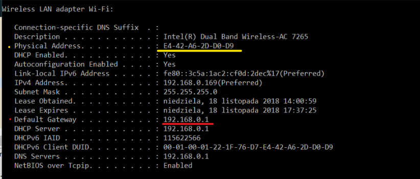
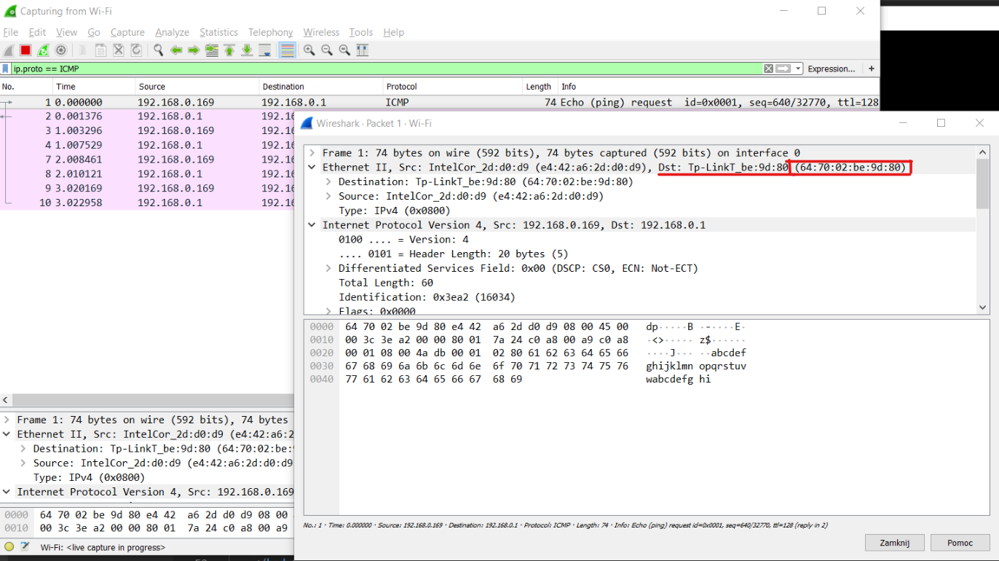
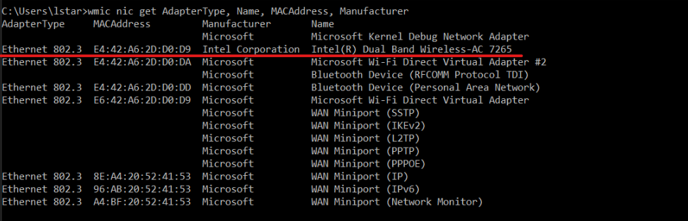
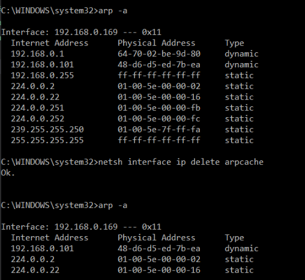
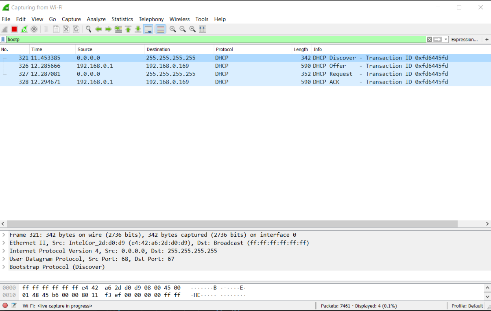
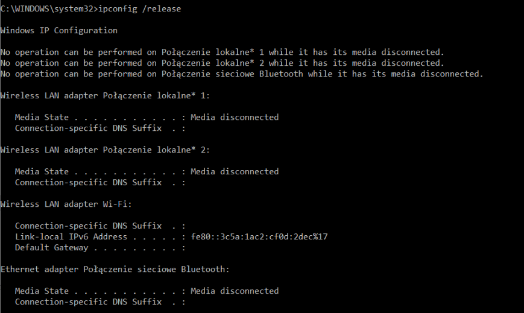
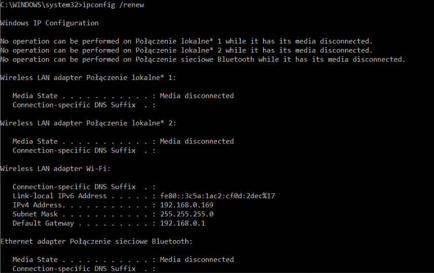

Theoretical part
Practical part
-
Find the MAC address of our computer:
Type in:
ipconfig /allThe MAC address is the physical address underlined in yellow. We can also see the Default Gateway IP (in red).
Find the default gateway using Wireshark:
Because we know the Default Gateway's IP address, we can ping it and find its MAC address through Wireshark. Use:
ping 192.168.0.1And apply filters in Wireshark:
ip.proto == ICMPNow, upon examining the ECHO Request packet we can see the Dst (destination) MAC address:
 -
To see our Network Adapter's manufactuter:
Type in the following into cmd:
wmic nic get AdapterType, Name, MACAddress, ManufacturerIt returns the information about adapter types, names of the adapters, their mac adresses and manufacturers.
We could have only printed the Manufacturer, but it would not tell us much about which adapters are we actually using. The actual manufacturer of our Network Adapter is underlined with red.
-
Flushing the ARP cache:
To accomplish this task, we had to run CMD as an Administrator.First, we check the initial state of the cache to later verify if the flush worked:
arp -adisplays the current ARP entries.
netsh interface ip delete arpcacheflushes the cache
arp -ais used to again check the entries after the flush.
Here we can see that some entries were deleted, so the flush was correct.
-
Setting the same IP address on two different hosts in the lab and detecting it using arp request
-
Saving packets used to obtain the IP Address with DHCP using Wireshark
First we have to release our current IP address using
ipconfig /releaseThen to obtain an IP address we type in:
ipconfig /renewThe result in Wireshark (applying the filter bootp - DHCP uses the Bootstrap Protocol):
The following packets of the DHCP protocol are collected by Wireshark:
-
Discover
First the client sends a DHCPDISCOVER message to every server and "asks" to keep its previous IP address.
Notice, that our IP address is 0.0.0.0 at the moment. -
Offer
The DHCP server sends a message with a potential IP address of the client.
-
Request
The client collects the first IP address obtained from all DHCP servers that could send a message and broadcasts a DHCPREQUEST message. It may contain a query for other parameters.
-
ACK (Acknowledge)
Upon receiving the DHCPREQUEST message, the server may store the IP address and send a DHCPACK message. If the address specified in DHCPOFFER cannot be provided anymore, the server sends a DHCPNAK meessage.
-
-
Releasing and renewing the IP
First we release our current IP address using
ipconfig /releaseThen, to connect back to the Internet we need to obtain an IP address, therefore we type in:
ipconfig /renew -